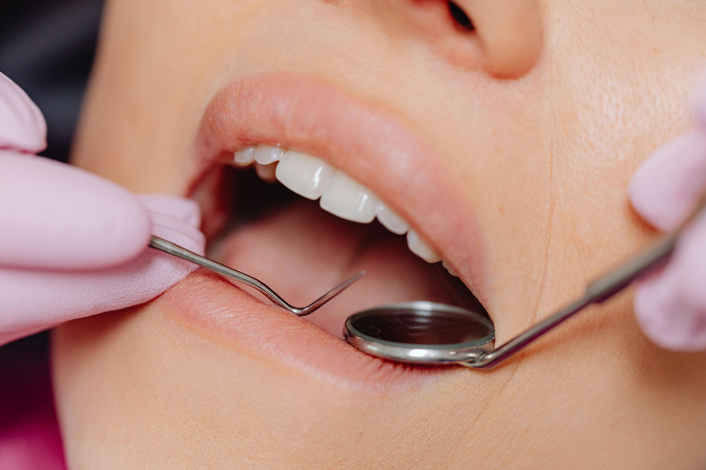
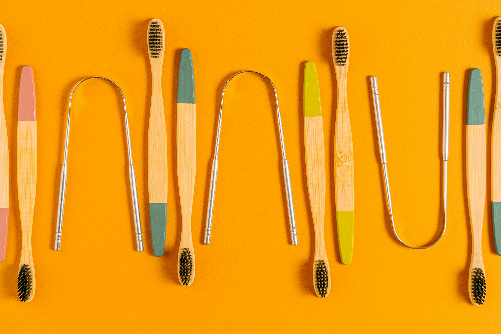
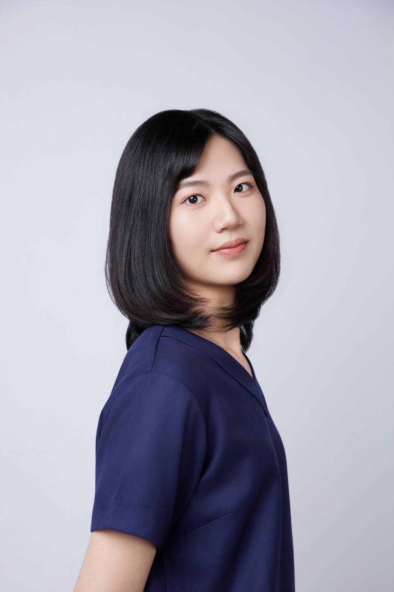

01 — 陶瓷嵌體
陶瓷嵌體 / 3D齒雕
Ceramic Inlay
Q 陶瓷嵌體是什麼？
嵌體是客製化假牙，用於大面積蛀牙修復。採用陶瓷材料製作，兼顧美觀與保護脆弱牙齒結構，防止斷裂。
Q 跟傳統假牙有什麼不同？
傳統牙冠需磨除整圈牙齒。陶瓷嵌體只填補缺損部位，保留更多原生牙齒結構，讓未來有更多治療選擇。

新竹 ／ 蔚然美學牙醫診所
王穎柔醫師專精 3D齒雕與活髓治療，提供您最合適的治療服務。

王穎柔 醫師
蔚然美學牙醫診所
關於醫師 — About
王穎柔醫師為國立陽明大學牙醫系畢業，曾任職台北榮民總醫院口腔醫學部，接受完整訓練後，現於新竹蔚然美學牙醫診所執業。致力以最微創的方式，為患者留下最多的「牙齒資本」。
專長療程

01 — 陶瓷嵌體
Ceramic Inlay
Q 陶瓷嵌體是什麼？
嵌體是客製化假牙，用於大面積蛀牙修復。採用陶瓷材料製作，兼顧美觀與保護脆弱牙齒結構，防止斷裂。
Q 跟傳統假牙有什麼不同？
傳統牙冠需磨除整圈牙齒。陶瓷嵌體只填補缺損部位，保留更多原生牙齒結構，讓未來有更多治療選擇。

02 — 活髓保存術
Vital Pulp Therapy
Q 什麼是活髓治療？
保留牙神經活性，是比根管治療更保守的選擇。只移除不健康牙髓，搭配生物材料保護健康部分，延長牙齒壽命。
Q 做了就不用根管治療了嗎？
成功的話可免去根管治療。但仍有失敗可能，失敗時仍需根管治療清除感染。建議由醫師評估後決定。
常見問題
一般補牙使用複合樹脂直接填補，適合小洞。陶瓷嵌體是在牙科技工所客製化製作，強度更高、密合度更好，適合中大型蛀牙窩洞，能更有效保護剩餘牙齒結構。
根據臨床研究，在正確適應症下活髓治療的成功率相當高。成功關鍵在於：牙髓的健康狀態、使用的生物材料，以及術後牙齒的完整修復。王穎柔醫師會在診斷後評估是否適合進行。
陶瓷嵌體為自費療程，健保目前不給付。費用依窩洞大小、牙位及材料有所不同，建議來診諮詢後由醫師提供詳細報價。
初診請攜帶健保卡，並提前告知目前服用藥物、過敏史，或之前的牙科治療紀錄。建議事先透過牙醫小幫手線上預約，避免等候時間。
Google 評價
「看診第二次才來評價 直接愛上王醫師😍 王醫師超級溫柔細心❤️ 我是看牙齒超級容易緊張的人 加上我是長期蛀牙補了又蛀，蛀了又補的人 王醫師在打麻藥 或是治療過程中捕捉到我有小動作或微表情 都能被王精準catch 到問我還好嗎😭❤️」
— 六o柒
「醫生很有耐心的答覆，體貼病人願花時間回答，讓病人感受被重視，這次洗牙是經驗值中最好的1次，看牙恐懼減輕，王醫生值得推薦。」
— Eoh
「本人很怕看牙醫！經過推薦嘗試看看蔚然牙醫！王醫生詳細解說，溫柔問診及看診，時時關心我的狀況，讓我慢慢能接受了！」
— 葉o婷
「這次是洗牙+檢查，發現一個蛀牙馬上補了 王穎柔醫師很細心很溫柔！！謝謝王醫師💗 新竹人真的都應該來這間看牙！」
— You
「今日是第一次給王醫師看診，非常感謝王醫師很細心和耐心親切的和我說明牙齒的問題及後續建議治療方針，讓我能在放鬆的狀態下去治療。」
— 黃o發
「王醫師技術好！過程很俐落一邊治療一邊講解，對於生活中保養牙齒也提供很實用的建議。」
— 王o賢
「醫師看診很細心～」
— 傅o婕
「看診第二次才來評價 直接愛上王醫師😍 王醫師超級溫柔細心❤️ 我是看牙齒超級容易緊張的人 加上我是長期蛀牙補了又蛀，蛀了又補的人 王醫師在打麻藥 或是治療過程中捕捉到我有小動作或微表情 都能被王精準catch 到問我還好嗎😭❤️」
— 六o柒
「醫生很有耐心的答覆，體貼病人願花時間回答，讓病人感受被重視，這次洗牙是經驗值中最好的1次，看牙恐懼減輕，王醫生值得推薦。」
— Eoh
「本人很怕看牙醫！經過推薦嘗試看看蔚然牙醫！王醫生詳細解說，溫柔問診及看診，時時關心我的狀況，讓我慢慢能接受了！」
— 葉o婷
「這次是洗牙+檢查，發現一個蛀牙馬上補了 王穎柔醫師很細心很溫柔！！謝謝王醫師💗 新竹人真的都應該來這間看牙！」
— You
「今日是第一次給王醫師看診，非常感謝王醫師很細心和耐心親切的和我說明牙齒的問題及後續建議治療方針，讓我能在放鬆的狀態下去治療。」
— 黃o發
「王醫師技術好！過程很俐落一邊治療一邊講解，對於生活中保養牙齒也提供很實用的建議。」
— 王o賢
「醫師看診很細心～」
— 傅o婕